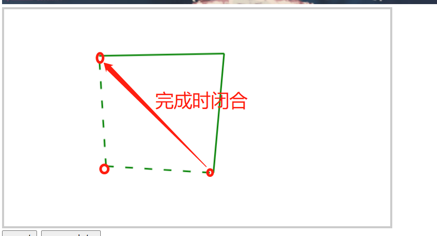
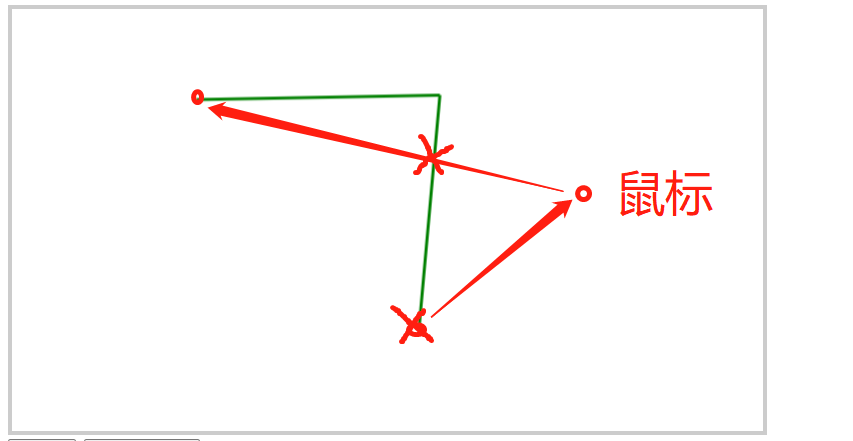
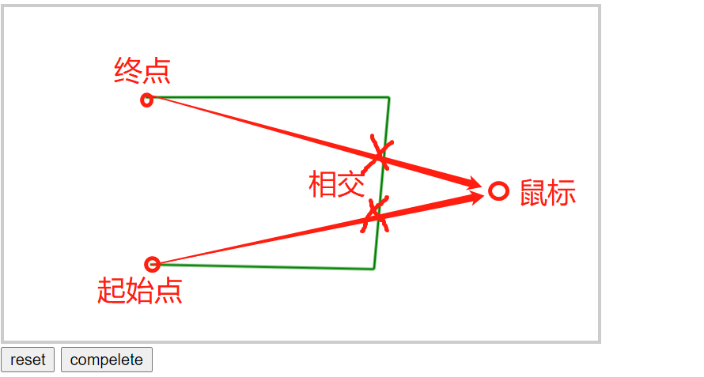
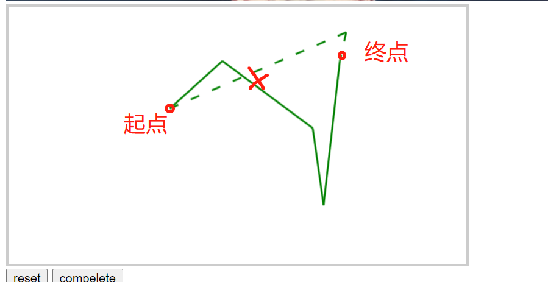

之前有过这么个需求, 说是要在图片中选区(车站,广场等),然后选区的要求是不规则凸多边形 按点连接, 之后要获取选区点坐标, 同时也有将生成点坐标回显展示选区的需求, 在一番调研之后决定使用fabric.js来实现功能
Fabric是一个强大而简单的JS Canvas库，我们能通过使用它实现在Canvas上创建、填充图形、给图形填充渐变颜色。 组合图形（包括组合图形、图形文字、图片等）等一系列功能。简单来说我们可以通过使用Fabric从而以较为简单的方式实现较为复杂的Canvas功能
思路
整个的思路大概是先初始化fabric实例,将图片展示到canvas上,根据图片和canvas的尺寸得到缩放比例,方便将后续得到的点坐标按图片尺寸还原.接着通过鼠标点击在canvas上绘制点,将点按照点击顺序连接成线,则得到多边形的边,此时三个点以上则可连接成多边形,当点击完成时将起始点与终点连接闭合成多边形.

其中核心的问题则是按顺序连接的点,当图形完成,起始点和终点连接时,选区图形是否能成为一个多边形?此处我采用的方式是, 通过鼠标移动,可以落点时鼠标同首尾点连接虚线,当无法绘制所需多边形时隐藏虚线并无法落点,确保已经绘制的点之间可连成多边形

即核心的判断则是:
- 起始点与鼠标连线:line1,终点与鼠标连线:line2,则line1,line2是否同时与已连接的线段相交, 同时相交则无法落点

- 已连接线段中除首尾两条外, 是否存在line1或line2与某条线段相交, 相交则无法落点

- 通过向量叉乘判断线段相交
1
2
3
4
5
6
7
8
9
10
11
12
13
14
15
16
17
|
function crossMul(v1, v2) {
return v1.x * v2.y - v1.y * v2.x;
}
function checkCross(p1, p2, p3, p4) {
var v1 = { x: p1.x - p3.x, y: p1.y - p3.y },
v2 = { x: p2.x - p3.x, y: p2.y - p3.y },
v3 = { x: p4.x - p3.x, y: p4.y - p3.y },
v = crossMul(v1, v3) * crossMul(v2, v3);
v1 = { x: p3.x - p1.x, y: p3.y - p1.y };
v2 = { x: p4.x - p1.x, y: p4.y - p1.y };
v3 = { x: p2.x - p1.x, y: p2.y - p1.y };
return v <= 0 && crossMul(v1, v3) * crossMul(v2, v3) <= 0
? true
: false;
}
|
实现
首先页面上要有个canvas容器,据此生成fabric的canvas实例,还要将图片展示在canvas中,然后根据图片尺寸,canvas尺寸得到展示的缩放比例radio
1
2
3
4
5
6
7
8
9
10
11
12
13
14
15
16
| var convasDefaultWidth = 500;
var image = new fabric.Image(document.getElementById("image"));
var imageWidth = image.get("width");
var canvasWidth =
imageWidth > convasDefaultWidth ? convasDefaultWidth : imageWidth;
var radio = imageWidth / canvasWidth;
var canvas = new fabric.Canvas("canvas", {
width: canvasWidth,
height: image.get("height") / radio,
backgroundImage: image.scaleToWidth(canvasWidth),
backgroundColor: 'transparent',
selection:false
});
|
当绘制完成或回显时, 直接使用fabric绘制多边形即可
1
2
3
4
5
6
7
8
9
10
| var polygon = new fabric.Polygon([], {
strokeWidth: 2,
stroke: "green",
fill: "transparent",
objectCaching: false,
});
canvas.add(polygon);
|
初始化各个状态,以及将来鼠标显示的连接线等
1
2
3
4
5
6
7
8
9
10
11
12
13
14
15
16
17
18
19
20
21
22
23
24
|
var points = [];
var canAddPoint = true;
var existLines = [];
var isCompelete = false;
var lineOption = {
strokeWidth: 2,
stroke: "green",
fill: "green",
selectable: false,
evented: false
};
var dashLineOption = Object.assign({},lineOption,{strokeDashArray: [10, 15]})
var combineLineWithFirst = new fabric.Line([0, 0, 0, 0], dashLineOption);
var combineLineWithSecond = new fabric.Line([0, 0, 0, 0], dashLineOption);
canvas.add(combineLineWithFirst);
canvas.add(combineLineWithSecond);
|
初始化fabric canvas的鼠标事件,即鼠标移动和点击
1
2
3
4
5
6
7
8
9
10
11
12
13
14
15
16
17
18
19
20
21
22
23
24
25
26
27
28
29
30
31
32
33
34
35
36
37
38
39
40
41
42
43
44
45
46
|
function canvasHandleMouseMove(options) {
var pointsLen = points.length;
if (pointsLen === 0) return;
var firstPoint = points[0];
var lastPoint = points[pointsLen - 1];
if (pointsLen > 2) {
var exlines = getLinesArr();
var hasCross = false;
for (var i = 0; i < exlines.length; i++) {
var perline = exlines[i];
var point1 = { x: perline[0], y: perline[1] };
var point2 = { x: perline[2], y: perline[3] };
if (
checkCross(options.pointer, firstPoint, point1, point2) &&
checkCross(options.pointer, lastPoint, point1, point2)
) {
hasCross = true;
break;
} else if (i > 0 && i < exlines.length - 1 && (checkCross(options.pointer, firstPoint, point1, point2) ||
checkCross(options.pointer, lastPoint, point1, point2))){
hasCross = true;
break;
}
}
}
if (!hasCross) {
canAddPoint = true;
setLineWithPoint(combineLineWithFirst, options.pointer, firstPoint);
setLineWithPoint(combineLineWithSecond, options.pointer, lastPoint);
} else {
canAddPoint = false;
setLineWithPoint(combineLineWithFirst);
setLineWithPoint(combineLineWithSecond);
}
canvas.renderAll();
}
|
1
2
3
4
5
6
7
8
9
10
11
12
13
14
15
16
17
18
19
20
21
22
23
24
25
26
27
28
29
30
|
function canvasHandleMouseDown(options) {
if (!canAddPoint) return;
var pointsLen = points.length;
var lastPoint = points[pointsLen - 1];
if (
lastPoint &&
options.pointer.x === lastPoint.x &&
options.pointer.y === lastPoint.y
)
return;
points.push({
x: +options.pointer.x.toFixed(3),
y: +options.pointer.y.toFixed(3),
});
if (lastPoint) {
var line = new fabric.Line(
[lastPoint.x, lastPoint.y, options.pointer.x, options.pointer.y],
lineOption
);
canvas.add(line);
existLines.push(line);
}
canvas.requestRenderAll();
}
|
当绘制完成或回显时则将鼠标连接线隐藏, 切换完成状态, 通过已绘制的点连接生成多边形,而重置则清空画布并重置状态即可
1
2
3
4
5
|
function drowPolygon(points) {
isCompelete = true;
polygon.set("points", points);
}
|
后续再优化的话 其实可以开放fabric多边形的锚点拖拽,旋转,形变等等
demo完整代码